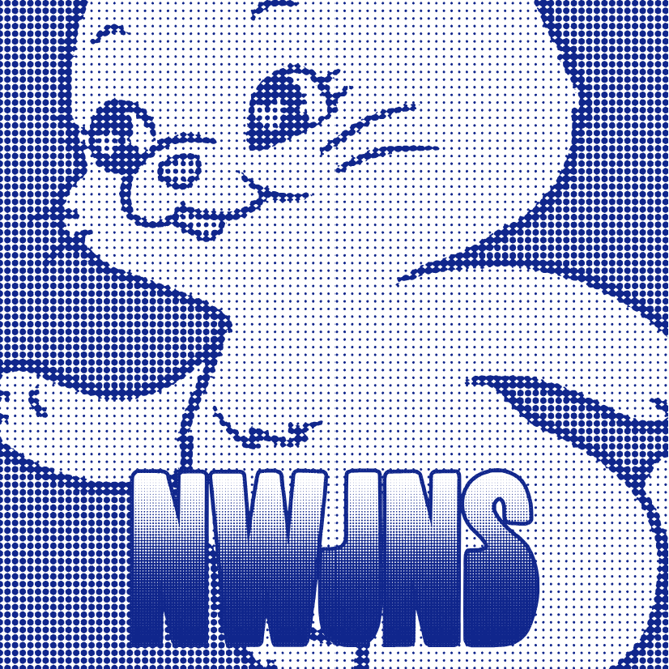
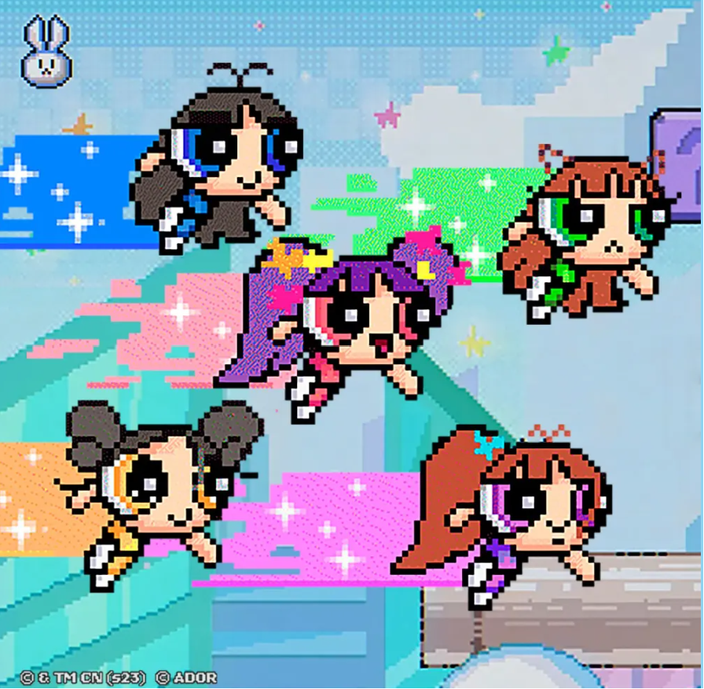

| 앨범명 | 앨범커버 | 출시일 | 타이틀곡 |
|---|---|---|---|
| New Jeans |  | 2022년 8월 1일 | Hype Boy |
| Get Up |  | 2023년 7월 21일 | ETA |
Baby (baby), got me looking so crazy (crazy) 빠져버리는 daydream (daydream) Got me feeling you 너도 말해줄래? 누가 내게 뭐래던 남들과는 달라 넌 Maybe you could be the one (one) 날 믿어봐 한번 I'm not looking for just fun Maybe I could be the one Oh, baby (baby) 예민하대 나 lately (lately) 너 없이는 매일 매일이 yeah (매일이 yeah) 재미없어, 어쩌지? I just want you call my phone right now I just wanna hear "you're mine" 'Cause I know what you like boy (ah-ah) You're my chemical hype boy (ah-ah) 내 지난날들은 눈 뜨면 잊는 꿈 Hype boy 너만 원해 Hype boy 내가 전해 And we can go hi-i-i-i-i-igh 말해봐 yeah 느껴봐 mm-mm Take him to the sk-y-y-y-y-y You know, I hype you, boy 눈을 감아-ah-ah-ah-ah-ah 말해봐 yeah 느껴봐 mm-mm Take him to the sk-y-y-y-y-y You know, I hype you, boy 잠에 들려고, 잠에 들려 해도 니 생각에 또 새벽 세시 uh-oh 알려줄 거야 they can't have you no more 봐봐, 여기 내 이름 써있다고 yeah 누가 내게 뭐래던 남들과는 달라 넌 Maybe you could be the one 날 믿어봐 한번 I'm not looking for just fun Maybe I could be the one Oh, baby (baby) 예민하대 나 lately (lately) 너 없이는 매일 매일이 yeah (매일이 yeah) 재미없어, 어쩌지? I just want you call my phone right now I just wanna hear "you're mine" 'Cause I know what you like boy (ah-ah) You're my chemical hype boy (ah-ah) 내 지난날들은 눈 뜨면 잊는 꿈 Hype boy 너만 원해 Hype boy 내가 전해 And we can go hi-i-i-i-i-igh 말해봐 yeah 느껴봐 mm-mm Take him to the sk-y-y-y-y-y You know, I hype you, boy 눈을 감아-ah-ah-ah-ah-ah 말해봐 yeah 느껴봐 mm-mm Take him to the sk-y-y-y-y-y You know, I hype you, boy
낭비하지 마, 네 시간은 은행 서둘러서 정리해, 걔는 real bad 받아주면 안돼, no, you better trust me 답답해서, 그래 저번에도 봤지만 너 없을 때 걘 여기저기에 눈빛을 뿌리네 아주 눈부시게, honestly, 우리 사이에 He's been totally lying, yeah 내 생일 파티에 너만 못 온 그날 혜진이가 엄청 혼났던 그날 지원이가 여친이랑 헤어진 그날 걔는 언제나 네가 없이 그날 너무 멋있는 옷을 입고 그날 Heard him say We can go wherever you like Baby, say the words and I'm down All I need is you on my side We can go whenever you like, now where are you? what's your ETA? What's your ETA? (Mmm-hmm) what's your ETA? What's your ETA? (Mmm-hmm) what's your ETA? What's your ETA? I'll be there right now, lose that boy on her arm 아파 맘이 네가 걔 못 잊을 때 내 말 믿어, you deserve better than that 내가 도와줄게, 걔는 그냥 playing Boys be always lying, yeah 내 생일 파티에 너만 못 온 그날 혜진이가 엄청 혼났던 그날 지원이가 여친이랑 헤어진 그날 걔는 언제나 네가 없이 그날 너무 멋있는 옷을 입고 그날 Heard him say We can go wherever you like Baby, say the words and I'm down All I need is you on my side We can go wherever you like, now where are you? what's your ETA? What's your ETA? (Mmm-hmm) what's your ETA? What's your ETA? (Mmm-hmm) what's your ETA? What's your ETA? I'll be there right now, lose that boy on her arm Need a boy on my arm (need a boy on my arm) Need a boy on my arm (my arm, my arm) Want a boy on my (want a boy on my) Need a boy on my arm (my arm, my arm)